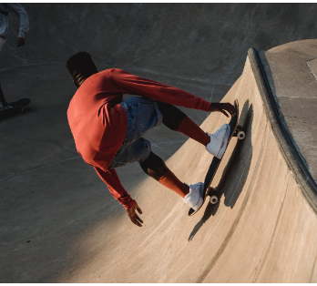
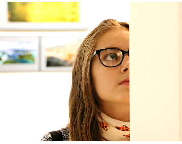

Nossas Propostas
Horta orgânica
A horta orgânica seria um local de encontro para a comunidade, um santuário de paz e beleza, onde todos são bem-vindos para se conectar com a terra e desfrutar dos benefícios da agricultura sustentável. Este espaço seria mais do que apenas uma horta; seria um ambiente educacional, inspirador e terapêutico.
Nossa missão nesse local estaria a promover a agricultura orgânica como um estilo de vida saudável e sustentável. Acreditamos que todos podem cultivar seu próprio alimento, não importa o tamanho de sua propriedade ou conhecimento prévio. Ofereceríamos workshops, aulas e recursos para ensinar as pessoas a plantar, cuidar e colher seus próprios produtos orgânicos.
O respeito pela natureza seria a base do nosso projeto. Utilizaríamos práticas orgânicas, como a compostagem, o cultivo rotativo e o manejo natural, para criar um solo fértil e saudável. Além disso, a diversidade de culturas na horta incentivaria a biodiversidade, promovendo um ambiente equilibrado e sustentável.
Teatro
O espaço seria um local dedicado à expressão artística, à criatividade e à comunicação por meio das artes do palco. Este teatro não seria apenas um espaço de entretenimento, mas também um centro de aprendizado, onde atores, diretores e amantes das artes poderiam desenvolver seu talento e paixão.
Também seria um local dedicado à expressão artística, à criatividade e à comunicação por meio das artes do palco. Este teatro não seria apenas um espaço de entretenimento, mas também um centro de aprendizado, onde atores, diretores e amantes das artes poderiam desenvolver seu talento e paixão.
Além de apresentações regulares, workshops, cursos de atuação e eventos comunitários para promover o crescimento artístico e cultural em nossa região.
Pista de Skate
A pista seria um local dedicado à cultura do skate, onde entusiastas de todas as idades poderiam praticar, aprimorar suas habilidades e compartilhar sua paixão pelo esporte.
Além de ser um espaço de diversão, a "Pista Radical" promoveria a segurança e o respeito mútuo entre os praticantes. Equipamentos de proteção, como capacetes e joelheiras, seriam fortemente incentivados para garantir que todos desfrutassem do skate com responsabilidade.
Acreditamos que o skate é uma forma de expressão artística e uma maneira única de se conectar com a cidade. Com a ela, esperamos proporcionar um ambiente seguro e emocionante para todos os apaixonados pelo skate, onde possam aprimorar suas habilidades, criar novas amizades e vivenciar a cultura única deste esporte.
Museu
O museu seria um local de descoberta, onde visitantes de todas as idades poderiam explorar exposições intrigantes que abrangem a história local.
Acreditamos que um museu é um farol de conhecimento que une as comunidades, promove a compreensão e enriquece a vida cultural de nossa região. Com ele, esperamos proporcionar um local onde todos possam explorar, aprender e se inspirar, criando assim uma comunidade culturalmente rica e vibrante.